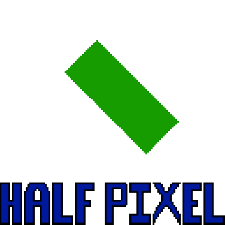

Half Pixel
"a pixel is a pixel. You can’t say its only a half."
—TJ “Henry” Yoshi, ???[?]
|

The Half Pixel logo. |
| Half Pixel |
|---|
|
Created: November 15, 2018[N]
|
{kind=link}
Half Pixel is Nathaniel’s studio/company/alias that is associated with any formal content he makes. Created in 2018 solely to put an association on Panic Machine, Half Pixel is a joke of how Panic Machine utilizes the technique of mixels to achieve a higher depth, resulting in differences in resolution; hence "Half Pixel"[N]. A more technically accurate term would be sub-pixels, as those are actually accounted for in programming. The name was chosen, however, because it rolls off the tongue a lot easier.
As fate would have it, the name and iconography would extend past Panic Machine and go on to be used on other Nathaniel projects.
- 1.History
- 2.Chant
- 3.Media Presented By
- 4.Trivia
- 5.Gallery
- 6.References
History
Half Pixel was created for Panic Machine on November 15th, 2018, arbitrarily during a high school social studies class. Mostly as a ‘what if’ if Nathan was to own a production suite of sorts. The original animation was created in Piskel and exported. Half Pixel’s logo and chime has been gone on to be used in multiple games since.
Chant
The “Half Pixel!” chant was created during or after the creation of the logo animation and name. The cadence and lyrics of the chant are directly inspired by companies such as Sega. The chant always has the same timings for the notes, but different pitches per spokesperson. The speaker for the chant is usually on a media to media basis, using the voices for the characters in that specific media. For instance, in Panic Machine, Machine, Beta, and other characters relevant to the story according to your save file will perform the chant every time the game is launched.[1]
performing the chant.
Media Presented By
This is a list of media that has the Half Pixel branding attached to it. This does not include things Nathan has worked on adjacent.
| 2018 | Panic Machine | Made By (Nathan) |
|---|---|---|
| 2020 | Further Heights (Post Launch) | Made By (Nathan) |
| 2021 | Silly Little Game | Made By (Nathan) |
| 2022 | Colli Gage (Post Launch) | Made By (Nathan) |
Trivia
- The original Half Pixel animation was started and finished within the same class period.
- After showing the finished animation to his friend behind him, the reaction was “You made that?”
- Most versions of the basic logo animation are taken from the Clickteam version of Panic Machine. This is evident because there are artifacts in the lettering.
- When a media does not have fully voiced characters, the chant uses sound bytes instead.
- Silly Little Game is currently the only Half Pixel game to not have a chant. This is because the placement being moved to the credits instead of the beginning, to make the game flow a bit better.
References
| Half Pixel | [hide] | |
| Games | Panic Machine • Silly Little Game • Further Heights • Colli Gage | |
|---|---|---|